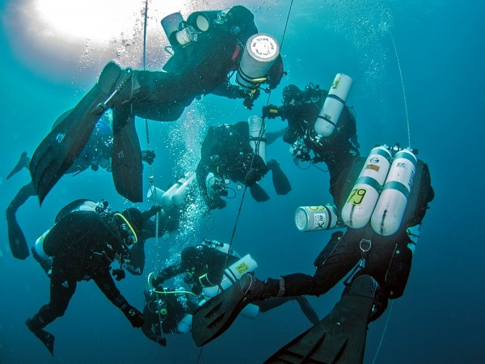

Zaronite dublje od očekivanog
Tehničko ronjenje za one koji žele više — obuke, putovanja i zajednica posvećena granicama podvodnog sveta.

Šta je tehničko ronjenje?
Tehničko ronjenje je napredna forma ronjenja koja prevazilazi granice rekreativnog ronjenja — dublje od 40 metara, u zatvorenim prostorima, sa mešavinama gasova i dekompresijskim zaustavljanjima.
U klubu Tec Dive Subotica pripremamo ronioce za sve izazove tehničkog ronjenja kroz sveobuhvatne obuke, redovne vežbe i organizovana putovanja na najlepše destinacije.
Obuke za svaki nivo
Od prvog zarona do tehničke ekspertize — pratimo vas kroz ceo put napredovanja.
Uvod u tehničko ronjenje
Idealan kurs za rekreativne ronioce koji žele da uđe u svet tehničkog ronjenja. Naučite osnove, opremu i sigurnosne procedure.
Napredno tehničko ronjenje
Dekompresujoni zaroni, prošireni nitrox, sidemount konfiguracija i napredno planiranje zarona za iskusne tehničke ronioce.
Specijalizovani kursevi
Pećinsko ronjenje, vrakolozi, trijmix — specijalizovani programi za ronioce koji žele da dostignu vrhunac tehničkog ronjenja.
Ronilačka putovanja koja ostavljaju bez daha
Organizujemo grupna ronilačka putovanja na najlepše destinacije — od Jadranskog mora do Crvenog mora, Egipta, Malte i dalje. Svako putovanje je prilika za nova iskustva, duboke zaroni i nezaboravna prijateljstva.
Vaš put do tehničkog ronjenja
Teorijska obuka
Savladate teorijsku osnovu — fiziku ronjenja, fiziologiju, planiranje zarona i sigurnosne procedure.
Bazen i kontrolisani zaroni
Vežbate veštine u kontrolisanom okruženju — bazenu i plitkim, sigurnim lokacijama uz stalni nadzor.
Otvorena voda
Primenjujete naučeno na pravim lokacijama i dobijate sertifikat koji važi širom sveta.